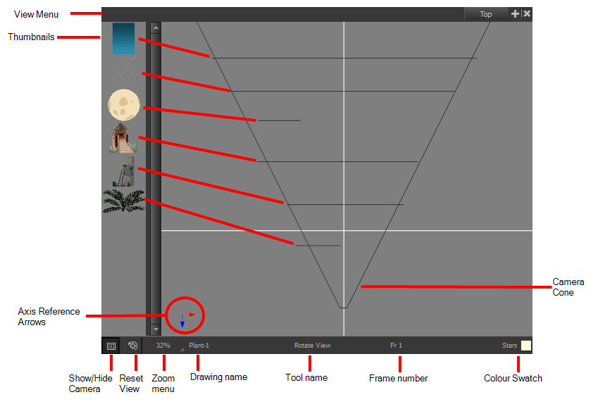
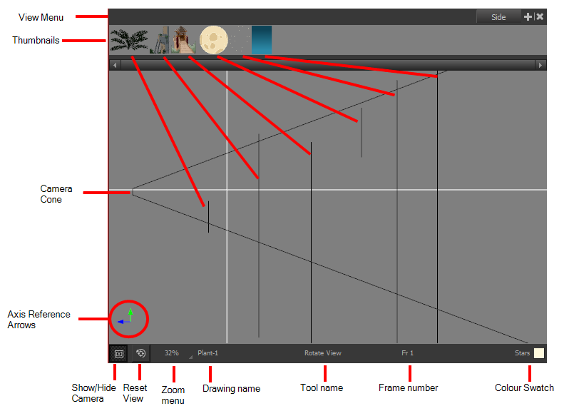
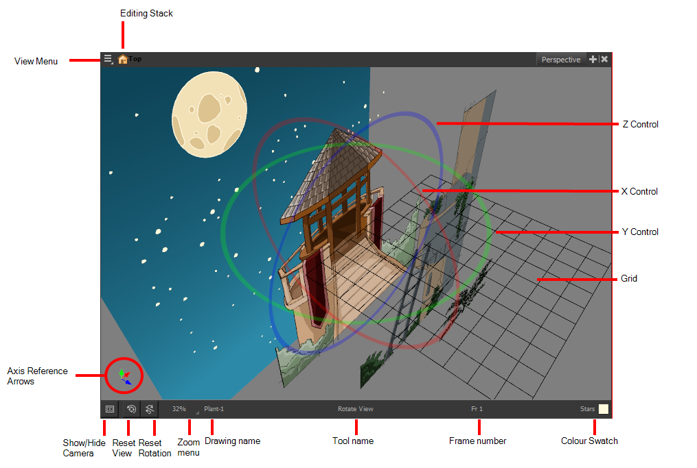
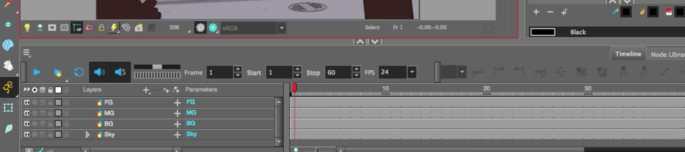
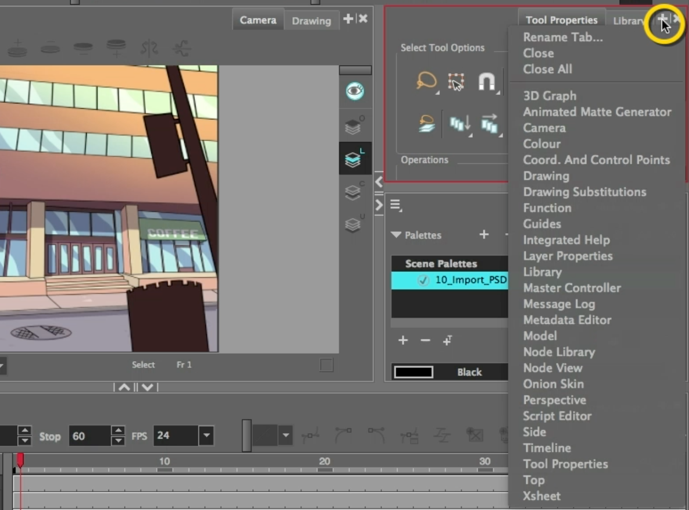
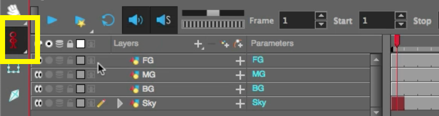
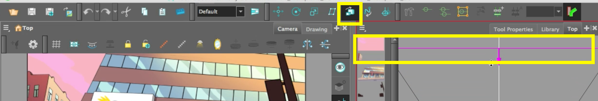
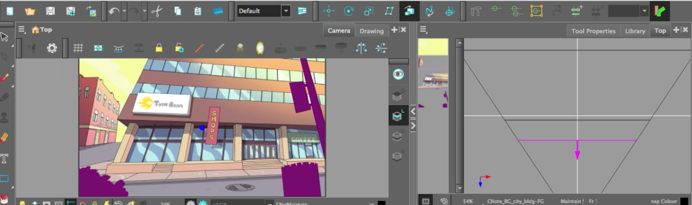

About this Lesson:
In 1933, the former Walt Disney Studios animator Ub Iwerks invented the multiplane camera. This special camera is used to move through a number of different layers in a scene to create the perception of depth. The multiplane camera, which was set up vertically much like a photographic enlarger, would shoot down through as many as five planes. The planes were attached to vertical posts that allowed four of the planes to move independently of one another. The first two planes were used for animation, the next two were for backgrounds, and the fifth was fixed and used for sky backgrounds. The finished result produced a depth of perspective which had not previously been seen in animated films.In Toon Boom Harmony, you can create a parallax by applying a multiplane camera effect. Using Top View, You simply need to spread and scale the objects along the Z-axes. Start by selecting and repositioning each element to the correct depth position in the camera cone. Selected layers in Top View will look pink. Preview your animated scene in Perspective View by pressing and holding Ctrl + Alt (Windows) or ⌘ + Alt (macOS) and click and drag to rotate the view one axes at a time. Finally add and move a camera in your animated scene
Lesson Duration: 4 hours
Topics:
- 3D Space: Harmony is well known for its multiplane space where you can move your layers forward and backward on the Z-axis. Harmony brings you a true three-dimensional space where you can actually rotate your camera and layers on all axes. This lets you perform a 360 degree rotation around elements, create a floor and even build sets!
- X, Y and Z axes: Harmony contains a camera that can move along the X, Y, and Z axes. Having the camera move on the Z-axis offers the possibility to create truck in and truck outs, as well as multiplane camera moves. The default camera position is centered and backed up to 12 fields.
- Multiplane: The effect of passing through multiple levels of drawings to create a sense of depth in a shot. A multiplane is a scene in which the layers are placed at different distances from the camera so that when the camera moves, a depth illusion occurs. With a multiplane, all the perspective and scale is calculated automatically.
- Foreground, Middle ground(s), and Background: Different layers in a 3D environment.
- Parallax: Parallax is the apparent displacement of an object because of a change in the observer's point of view.
Harmony Topics:
- Top View: The Top view is used mainly for multiplane scenes and to position elements in 3D space. It allows you to see the scene’s stage from above. This lets the camera cone and the spacing between the elements be seen.

- Side View: The Side view is used mainly for multiplane scenes and to position elements in 3D space. It allows you to see a scene’s stage from the side. This lets the camera cone and spacing between the elements to be seen.

- Perspective View: The Perspective view is used during scene setup. It allows you to see a multiplane scene’s orientation. The Perspective view is similar to a 3D display, as it lets you rotate the scene through all possible angles to understand the spacing between the elements. You can also position and rotate your layers and the camera inside the 3D display to achieve some 3D setup and camera moves.

- Camera: The Camera view is the center of operations in Harmony. In this view, you can draw, paint, animate, set up your scene, manipulate objects, open symbols and preview your animation. The Camera view also has a top and bottom toolbar that you can use to navigate in the view, change the display mode or go up your symbol hierarchy. Add a peg to control and move the camera.
- Advanced Animation Toolbar: The Advanced Animation toolbar contains tools to position and animate layers. The Scale, Translate and Rotate tools can be used to reposition the permanent pivot position of a layer. Unlike the Transform tool, each tool in the Advanced Animation toolbar performs a single operation, either rotate, scale, translate or scale in relation to the camera distance.
- Translate Tool: Lets you move the selected element along the X and Y axes.
- Maintain Size: Keeps elements the same size aspect ratio in the Camera view as you move them towards or away from the camera.
- Camera Mask: The Camera Mask button shows or hides Displays a black mask around the scene’s frame to avoid seeing the unnecessary artwork. This option is handy when you're animating and setting up the scene. It allows you to see your scene’s composition better.
Task:
-
Download the support files from the Lesson Files.
-
Watch and take notes on the About the Multiplane video lesson and the topics presented in this lesson. Taking notes in your sketchbook/notebook on how to use Harmony and any animation terminology will help you prepare for your certification exam at the end of this course.
-
Watch, complete and take notes on the Creating Multiplanes video tutorial (below) and the topics presented in this lesson.
-
Be sure to save, export and submit your Harmony file as: YourName_Multiplane in your Documents folder.
Part 1 - The Multiplane Camera:
-
Launch Toon Boom Harmony.
- In the Welcome Window, open the file named: 11_Multiplanes_BG
- Go to File/Import/Images and select the CNote_BG_city_bdg.psd.
- Take some time to investigate the construction of the Timeline layers. Your Timeline should look like this:

- You are now going to learn how to apply these layers on the Z axes and add a camera.
- Go to the Tool Property View and select the + icon on the top far right corner. Add Top View.

- Top View provides an aerial view on your scene. On the left side you will find your art layers
- As an example of Z depth, use the Translate tool in the Advanced Animation Toolbar to move the sky along the Z axes (depth). Notice how it moves forward and back in the Camera view as you move it in Top view. The sky gets smaller.
- By moving the Sky layer you will notice a Key Frame has been added to frame 1 of the Sky layer.
- Undo your actions until you see the Key Frame disappear
- Disable the Animate tool (turns the yellow running person into a red standing person) so Key Frames are not added right away.

- In the Advanced Animation Toolbar select the Maintain size tool.
- Select the Sky layer in Top view. Move the Sky layer back in the Top View (the sky will now stay the same size as the Camera Cone (yellow rectangle) in the Top view.

- Push the Sky layer back in the Z space (close to the top of Top view.
- Select the BG layer and move it further back, 2/3 along the Z axes. Not too close to the sky layer.
- Select the MG layer and move it forward a little.
- Select the FG and pull it in front of the MG layer.

- In the Timeline add a camera by selecting the + icon/Camera.
- Select the Camera layer in the Timeline and Add Peg.
- Enable the Animate Tool.
- Select Frame 1 of the Camera Peg layer and add a Key Frame by pressing F6 (macOS) or Func+F6 on (windows).
- Go to frame 50 and select the Translate tool. Grab the Pink arrow and push the Top view forward.
- In the Camera View grab the red arrow using the Translate tool and slide it to the left,
Hint: Space bar is freehand, 1 is Zoom out and 2 is Zoom in. These shortcuts will help you navigate this lesson.
- Select the Key Frame on frame 1 of the Camera Peg layer.
- Select CMD+K or CTRL+K to create a tween between your 2 Key Frames.
- Set the easing on the Key frames by selecting the Set Ease Type in the Timeline. Select the S shape path (fourth one down).
- Select another layer.
- Enable the Camera Mask in the Camera view.
- Press Loop and Play to test your animated scene.
- Go to File/Save.
- In the main menu go to Scene/Scene Duration and set it to 120 frames.
- Modify your animated scene for the entire 120 frames.
- Export your animation as a movie file as YourName_Multiplane.
- Submit YourName_Multiplane below.